The original, as published: Tony R. Kuphaldt, Lessons In Industrial Instrumentation, Magnetic flowmeters. CC BY 4.0, https://creativecommons.org/licenses/by/4.0/. Imported as published, from https://www.ibiblio.org/kuphaldt/socratic/sinst/book/liii.pdf https://www.ibiblio.org/kuphaldt/socratic/sinst/book/liii.pdf
When an electrical conductor moves perpendicular to a magnetic field, a voltage is induced in that conductor perpendicular to both the magnetic flux lines and the direction of motion. This phenomenon is known as electromagnetic induction, and it is the basic principle upon which all electro-mechanical generators operate. In a generator mechanism, the conductor in question is typically a coil (or set of coils) made of copper wire. However, there is no reason the conductor must be made of copper wire. Any electrically conductive substance in motion is sufficient to electromagnetically induce a voltage, even if that substance is a liquid40. Therefore, electromagnetic induction is a technique applicable to the measurement of liquid flow rates. Consider water flowing through a pipe, with a magnetic field passing perpendicularly through the pipe:
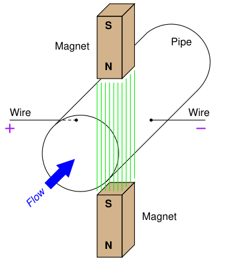
The direction of liquid flow cuts perpendicularly through the lines of magnetic flux, generating a voltage along an axis perpendicular to both. Metal electrodes opposite each other in the pipe wall intercept this voltage, making it readable to an electronic circuit.
40In a practical sense, only liquid flows are measurable using this technique. Gases must be super-heated into a plasma state before they are able to conduct electricity, and so electromagnetic flowmeters cannot be used with most industrial gas flowstreams.
A voltage induced by the linear motion of a conductor through a magnetic field is called motional EMF, the magnitude of which is predicted by the following formula (assuming perfect perpendicularity between the direction of velocity, the orientation of the magnetic flux lines, and the axis of voltage measurement):
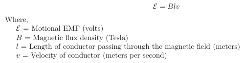
Assuming a fixed magnetic field strength (constant B) and an electrode spacing equal to the fixed diameter of the pipe (constant l = d), the only variable capable of influencing the magnitude of induced voltage is velocity (v). In our example, v is not the velocity of a wire segment, but rather the average velocity of the liquid flowstream (v). Since we see that this voltage will be proportional to average fluid velocity, it must also be proportional to volumetric flow rate, since volumetric flow rate is also proportional to average fluid velocity41. Thus, what we have here is a type of flowmeter based on electromagnetic induction. These flowmeters are commonly known as magnetic flowmeters or simply magflow meters. We may state the relationship between volumetric flow rate (Q) and motional EMF (E) more precisely by algebraic substitution. First, we will write the formula relating volumetric flow to average velocity, and then manipulate it to solve for average velocity:
Q = Av
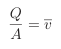
Next, we re-state the motional EMF equation, and then substitute Q
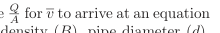
relating motional EMF to volumetric flow rate (Q), magnetic flux density (B), pipe diameter (d), and pipe area (A):
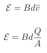
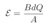
41This is an application of the transitive property in mathematics: if two quantities are both equal to a common third quantity, they must also be equal to each other. This property applies to proportionalities as well as equalities: if two quantities are proportional to a common third quantity, they must also be proportional to each other.
Since we know this is a circular pipe, we know that area and diameter are directly related to each other by the formula A = πd2
4 . Thus, we may substitute this definition for area into the last equation, to arrive at a formula with one less variable (only d, instead of both d and A):
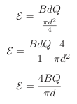
If we wish to have a formula defining flow rate Q in terms of motional EMF (E), we may simply
manipulate the last equation to solve for Q:
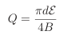
This formula will successfully predict flow rate only for absolutely perfect circumstances. In order to compensate for inevitable imperfections, a “proportionality constant” (k) is usually included in the formula42:
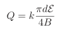
Where, Q = Volumetric flow rate (cubic meters per second) E = Motional EMF (volts)
B = Magnetic flux density (Tesla) d = Diameter of flowtube (meters) k = Constant of proportionality
Note the linearity of this equation. Nowhere do we encounter a power, root, or other nonlinear mathematical function in the equation for a magnetic flowmeter. This means no special characterization is required to calculate volumetric flow rate. A few conditions must be met for this formula to successfully infer volumetric flow rate from induced voltage:
42The colloquial term in the United States for this sort of thing is fudge factor.
The first condition is met by careful consideration of the process liquid prior to installation. Magnetic flowmeter manufacturers will specify the minimum conductivity value of the liquid to be measured. The second and third conditions are met by correct installation of the magnetic flowtube in the pipe. The installation must be done in such a way as to guarantee full flooding of the flowtube (no gas pockets). The flowtube is usually installed with electrodes across from each other horizontally (never vertically!) so even a momentary gas bubble will not break electrical contact between an electrode tip and the liquid flowstream. The following photograph shows how not to install magnetic flowmeters:
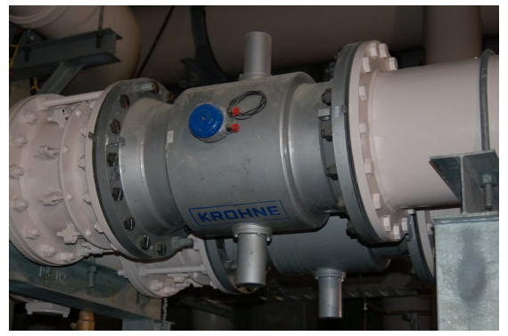
Note in this example how the electrodes are vertically oriented instead of horizontal, because the pipes for these two magnetic flowmeters were placed too close43 to allow proper clearance for the protruding electrodes to lie horizontally. Sadly, poor flowmeter installation is all too common in new projects, as many piping designers and pipefitters are ignorant of flowmeter operating principles. This is one way instrument engineers and technicians may deter operational problems: by involving themselves in the design phase of a piping system, and helping to educate piping designers.
Magnetic flowmeters exhibit several advantages over other types of flowmeter. They are fairly tolerant of swirl and other large-scale turbulent fluid behavior, because the induced voltage is proportional only to the perpendicular velocity of the conductor, in this case the velocity of the fluid along the centerline of the flowtube. As such, magnetic flowmeters do not require the long straight-runs of pipe upstream and downstream that orifice plates do, which is a great advantage in
43The obvious solution to this problem – relocating the pipes to give more clearance between flowmeters – would be quite expensive given the large pipe sizes involved. A “compromise” solution is to tilt the magnetic flowtubes as far as possible without the electrodes touching the adjacent flowtube. Horizontal electrode installation is ideal for horizontal pipes, but an angled installation will be better than a vertical installation.
many piping systems. Upstream straight-pipe requirements of 5 diameters and downstream straightpipe requirements of 3 diameters is typical44. Additionally, the wide-open bore of a magnetic flowmeter’s tube means there is absolutely nothing to restrict the flow, resulting in extremely low permanent pressure loss. The lack of any obstruction within the path of fluid flow means magnetic flowmeters are quite tolerant of solids45 within the liquid flowstream, making them well-suited for measuring such process liquids as wastewater, slurries, wood pulp, and food products which might clog other types of flowmeters. In fact, magnetic flowmeters are the dominant flowmeter technology used in wastewater, wood pulping, and food processing industries for this very reason.
44As always, check the manufacturer’s literature for specific requirements, as variations do exist for different models and sizes of magtube. 45Even electrically non-conducting solid matter is tolerated well by magnetic flowmeters, since the conducting liquid surrounding the solids still provides continuity from one electrode to the other.
Electrical conductivity of the process liquid must meet a certain minimum value, but that is all. It is surprising to some technicians that changes in liquid conductivity have little to no effect on flow measurement accuracy. It is not as though a doubling of liquid conductivity will result in a doubling of induced voltage! Motional EMF is strictly a function of physical dimensions, magnetic field strength, and fluid velocity. Liquids with poor conductivity present a greater electrical resistance in the voltage-measuring circuit than liquids with good conductivity, but this is of little consequence because the input impedance of the detection circuitry is phenomenally high. The effect of liquid conductivity on flowmeter operation may be modeled by the following DC circuits:
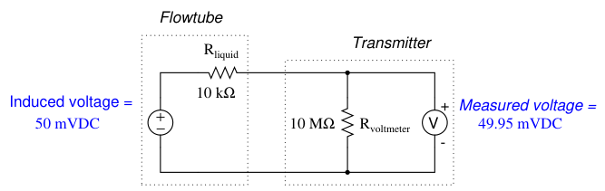
Here, a ten-fold (one order of magnitude) change in liquid resistance barely affects the measured voltage (49.995 mV versus 49.95 mV) because the flow transmitter’s voltage-sensing electronic circuit has such a high input impedance. The liquid’s equivalent resistance value must increase dramatically beyond the values shown in this example before it will have any significant effect on flow measurement accuracy. In fact, the only time fluid conductivity is a problem with magnetic flowmeters is when the fluid in question has negligible conductivity. Such fluids include deionized water (e.g. steam boiler feedwater, ultrapure water for pharmaceutical and semiconductor manufacturing) and oils. Most aqueous (water-based) fluids work fine with magnetic flowmeters.
Proper grounding of the flowtube is very important for magnetic flowmeters. The motional EMF generated by most liquid flowstreams is very weak (1 millivolt or less!), and therefore may be easily overshadowed by noise voltage present as a result of stray electric currents in the piping and/or liquid. To combat this problem, magnetic flowmeters are usually equipped with grounding conductors placed to shunt (bypass) stray electric currents around the flowtube so the only voltage intercepted by the electrodes will be the motional EMF produced by liquid flow, and not voltage drops created by stray currents through the resistance of the liquid. The following photograph shows a Rosemount model 8700 magnetic flowtube, with two braided46-wire grounding straps clearly visible:
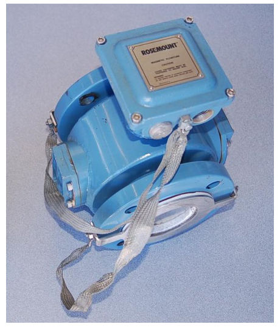
Note how both grounding straps attach to a common junction point on the flowtube housing. This common junction point should also be bonded to a functional earth ground when the flowtube is installed in the process line. On this particular flowtube you can see a stainless steel grounding ring on the face of the near flange, connected to one of the braided grounding straps. An identical grounding ring lays on the other flange, but it is not clearly visible in this photograph. These rings
46Braided conductors do a better job of shunting radio-frequency currents, because at very high frequencies the skin effect makes the surface area of a conductor a greater factor in its conductivity than its cross-sectional area. provide points of electrical contact with the liquid in installations where the pipe is made of plastic, or where the pipe is metal but lined with a plastic material for corrosion resistance. If the pipe connecting to a magnetic flowmeter’s flowtube is conductive (e.g. metal), grounding may be accomplished by joining the metal pipes’ flanges together with grounding straps to a common grounding point on the flowtube body as such:
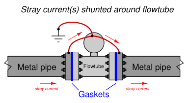
If the pipe connecting to a magnetic flowmeter’s flowtube is non-conductive (e.g. plastic) or conductive with an insulating lining (e.g. metal pipe with plastic lining), grounding to the pipe flanges will be pointless. In order for flowtube grounding to be effective, the grounding conductors must have electrical continuity to the fluid itself. Special grounding rings may be sandwiched between the flanges of non-conducting pipes to provide points of electrical contact with the fluid. These grounding rings are then joined together with grounding straps to a common grounding point on the flowtube body as such:
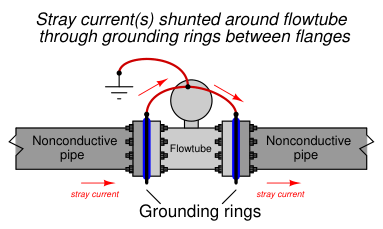
Some magnetic flowmeters have their signal conditioning electronics located integral to the flowtube assembly. A couple of examples are shown here (a pair of small Endress+Hauser flowmeters on the left and a large Toshiba flowmeter on the right):
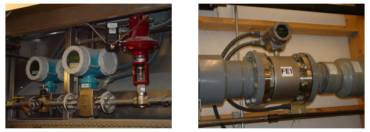
Other magnetic flowmeters have separate electronics and flowtube assemblies, connected together by shielded cable. In these installations, the electronics assembly is referred to as the flow transmitter (FT) and the flowtube as the flow element (FE):
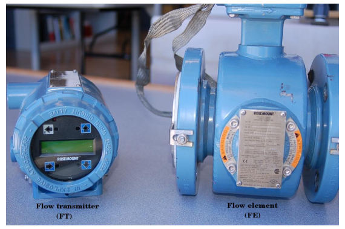
This next photograph shows an enormous (36 inch diameter!) magnetic flow element (black) and flow transmitter (blue, behind the person’s hand shown for scale) used to measure wastewater flow at a municipal sewage treatment plant:
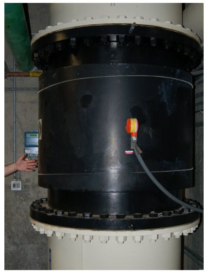
Note the vertical pipe orientation, ensuring constant contact between the electrodes and the water during flowing conditions.
While in theory a permanent magnet should be able to provide the necessary magnetic flux for a magnetic flowmeter to function, this is never done in industrial practice. The reason for this has to do with a phenomenon called polarization which occurs when a DC voltage is impressed across a liquid containing ions (electrically charged molecules). Electrically-charged molecules (ions) tend to collect near poles of opposite charge, which in this case would be the flowmeter electrodes. This “polarization” would soon interfere with detection of the motional EMF if a magnetic flowmeter were to use a constant magnetic flux such as that produced by a permanent magnet. A simple solution to this problem is to alternate the polarity of the magnetic field, so the motional EMF polarity also alternates and never gives the fluid ions enough time to polarize. This is why magnetic flowmeter tubes always employ electromagnet coils to generate the magnetic flux instead of permanent magnets. The electronics package of the flowmeter energizes these coils with currents of alternating polarity, so as to alternate the polarity of the induced voltage across the moving fluid. Permanent magnets, with their unchanging magnetic polarities, would only be able to create an induced voltage with constant polarity, leading to ionic polarization and subsequent flow measurement errors. A photograph of a Foxboro magnetic flowtube with one of the protective covers removed shows these wire coils clearly (in blue):
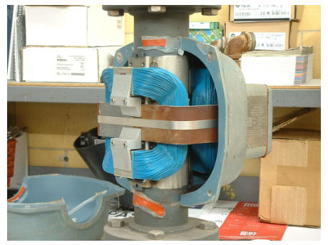
Perhaps the simplest form of coil excitation is when the coil is energized by 60 Hz AC power taken from the line power source, such as the case with this Foxboro flowtube. Since motional EMF is proportional to fluid velocity and to the flux density of the magnetic field, the induced voltage for such a coil will also be a 60 Hz sine wave whose amplitude varies47 with volumetric flow rate. Unfortunately, if there is any stray electric current traveling through the liquid to produce erroneous voltage drops between the electrodes, chances are it will be 60 Hz AC as well48. With the coil energized by 60 Hz AC, any such noise voltage may be falsely interpreted as fluid flow because the sensor electronics has no way to distinguish between 60 Hz noise in the fluid and a 60 Hz motional EMF caused by fluid flow. A more sophisticated solution to this problem uses a pulsed excitation power source for the flowtube coils. This is called DC excitation by magnetic flowmeter manufacturers, which is a bit misleading because these “DC” excitation signals often reverse polarity, appearing more like an AC square wave on an oscilloscope display. The motional EMF for one of these flowmeters will exhibit the same waveshape, with amplitude once again being the indicator of volumetric flow rate. The sensor electronics can more easily reject any AC noise voltage because the frequency and waveshape of the noise (60 Hz, sinusoidal) will not match that of the flow-induced motional EMF signal. The most significant disadvantage of pulsed-DC magnetic flowmeters is slower response time to changing flow rates. In an effort to achieve a “best-of-both-worlds” result, some magnetic flowmeter manufacturers produce dual-frequency flowmeters which energize their flowtube coils with two mixed frequencies: one below 60 Hz and one above 60 Hz. The resulting voltage signal intercepted by the electrodes is demodulated and interpreted as a flow rate.
47For example, in a condition of no liquid flow through the tube, the electrodes will intercept no voltage at all when the magnetic excitation is 60 Hz AC. When liquid moves slowly in the forward direction through the tube, a low-amplitude 60 Hz millivoltage signal will be detected at the electrodes. When liquid moves rapidly in the forward direction through the tube, the induced 60 Hz AC millivoltage will be greater in amplitude. Any liquid motion in the reverse direction induces a proportional 60 Hz AC voltage signal whose phase is 180o shifted from the excitation signal driving the magnetic coils of the flowtube. 48We know this because the largest electrical noise sources in industry are electric motors, transformers, and other power devices operating on the exact same frequency (60 Hz in the United States, 50 Hz in Europe) as the flowtube coils.